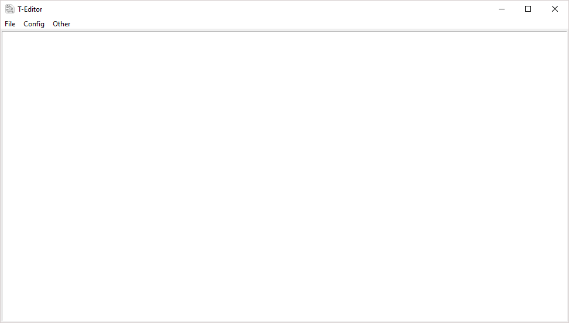

As i said just over this is just a plain txt editor
and it is just a not so great function of notepad
To find out how to use it go to "info" tab under "Other"
And oyu can find this project on github here
Download:
